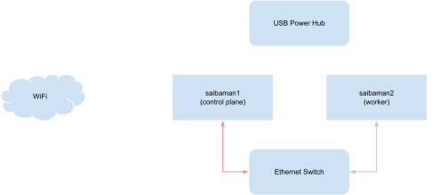

Saibamen Attack! Building a Raspberry Pi Cluster
Table of Contents
Over the holidays I made a k3s (that’s Kubernetes minus 5) cluster out of Raspberry Pis I had lying around. And while it’s extremely cool, it’s also pretty unstable.
In this post, I’ll outline what this new cluster looks like and go into detail on how I set it up. At the end, I’ll talk a little bit about why I won’t be entrusting it with my most important tasks just yet.
Overview⌗

To keep it simple, this cluster has just two nodes. In keeping with my tradition of naming computers after Dragon Ball Z villains, it’s collectively named the saibamen cluster (after those nasty little green aliens Nappa and Vegeta unleashed on our unsuspecting Z Fighters).
saibaman1-> master node- Also runs a DHCP server, assigning IP addresses on the cluster network
- Connected to the outside network over WiFi and shares that connection with the rest of the cluster
saibaman2-> worker node- Only connected to the cluster network
The Hardware⌗
- 2 x Raspberry Pi 3
- Note that k3s doesn’t support ARMv6, so you need at least a Pi 2. Older Pis like the Pi 1 and Pi Zero aren’t supported.
- 2 x MicroSD cards
- 1 x Ethernet switch
- 1 x USB power hub (I got this one, though I wonder if this is the culprit for some of the issues I’ve had)
The Software⌗
- Raspberry Pi OS (formerly known as raspbian)
- I tried NixOS first (I’m a bit of a fanboy) but had some trouble getting it working. Maybe someday!
- k3s
- Why k3s? Because it’s easy to set up and getting it working on Raspberry Pi is well documented.
- dnsmasq - the DHCP server running on the master node
- iptables - Used to share wifi connection with the rest of the cluster
Setup⌗
Installing and Configuring Linux⌗
Do this on both Pis.
-
Use your favorite method to install Raspberry Pi OS on the microSD card. Personally, I like good ol’
dd:sudo dd bs=4M if=path/to/image.img of=/dev/sdX conv=fsync -
You’ll likely want to run
sudo raspi-configand change a few things:In `System Options`, * Set a password * Set a hostname In `Interface Options`, * Enable SSH access In `Localisation Options`, * Set locale * Set timezone * Enable WiFi (on master only) -
Install your favorite editor (Vim, obvs)
sudo apt install vim -
Important! Add this line to the end of
/boot/cmdline.txtso k3s can run containerscgroup_enable=cpuset cgroup_memory=1 cgroup_enable=memory -
Reboot!
sudo reboot
Networking⌗
To keep cluster traffic isolated from my home network, the master node serves as a DHCP server and shares its WiFi connection over ethernet. It ends up looking something like this:
Wifi (192.168.1.x) -> saibaman1 -> Ethernet (192.168.2.x) -> saibaman2
Sharing a WiFi Connection⌗
The following is copied with a few small changes (mostly that I changed it to use 192.168.2.x) from this excellent forum post.
-
Configure the Pi’s WiFi connection. Check out this guide for how to do that. Once you’ve set up WiFi, you’ll probably want to disconnect it from ethernet if it’s connected. Running multiple DHCP servers can get weird pretty fast.
-
Install dnsmasq
sudo apt install dnsmasq -
Set a static IP address for
eth0. Open/etc/dhcpcd.confand add this to the end:interface eth0 static ip_address=192.168.2.1/24 -
Save or remove the original
dnsmasq.confsudo mv /etc/dnsmasq.conf /etc/dnsmaq.conf.orig -
Open
/etc/dnsmasq.confand add this:interface=eth0 dhcp-range=192.168.2.10,192.168.2.250,255.255.255.0,12h -
Open
/etc/sysctl.confand uncommentnet.ipv4.ip_forward=1 -
Open
/etc/rc.localand add this line aboveexit 0iptables -t nat -A POSTROUTING -o wlan0 -j MASQUERADE -
Reboot!
sudo reboot
Setting up k3s⌗
Install k3s on the master node⌗
-
sshinto the master pi -
Install
k3scurl -sfL https://get.k3s.io | sh - -
Check to see if it’s working. Run the following to see what nodes have been added to the cluster, you should see one node:
sudo kubectl get nodes -
Copy the join token, you’ll need this to add nodes to the cluster
sudo cat /var/lib/rancher/k3s/server/node-token
Install k3s on the worker node⌗
-
sshinto the worker pi -
Install
k3sand be sure to pass the token you copied earlier and the IP address of the master node:curl -sfL http://get.k3s.io | K3S_URL=https://192.168.2.1:6443 \ K3S_TOKEN=<join-token> sh - -
Once that’s done, check to see if it’s working.
sshback into the master node and run the following command. You should see two nodes:sudo kubectl get nodes
Grab your kubeconfig⌗
-
sshinto the master node -
Copy its kubeconfig
sudo cat /etc/rancher/k3s/k3s.yaml -
Return to the computer you’d like to put the kubeconfig onto
-
Make a
.kubefolder if one doesn’t exist alreadymkdir .kube -
Open
.kube/configand paste the contents of the file you copied earlier -
Replace
localhostwith the IP address of the master node relative to the computer you’re setting this up on:server: https://192.168.1.x:6443 -
Change the permissions of the new file so kubectl won’t complain about it (oh and because it’s the right thing to do):
chmod 600 ~/.kube/config -
Try it out!
kubectl get nodes
So How Is It?⌗
Well, let’s just say I wouldn’t put anything too important on it.
k3s crashes when I push the cluster to its limits, like when installing a particularly complex Helm chart. To make matters worse, that crash can put it in a state where it can’t start up again. I’ve had to reinstall it several times now.
I have a couple theories for why this happens.
Power Issues?⌗
Raspberry Pis are notoriously sensitive to power supply issues. Remember that xkcd about how clicking links in a Wikipedia article will eventually lead you to “Philosophy”? I’ve found that debugging any Raspberry Pi issue will eventually lead you to a storefront selling a better power supply. It’s weird how that always happens.
On one hand, it could be that my USB hub isn’t putting out enough power. I didn’t really look into it too much to be honest. I didn’t feel like buying new usb chargers and making the wiring more obnoxious for something that might be the issue.
I’m wondering if one of my Micro USB cables is to blame. Running vcgencmd measure_volts repeatedly under high CPU usage showed that one of my cables had a lower maximum voltage. I swapped it out and I feel like it’s been a bit better but it might just be wishful thinking.
Are My Raspberry Pis Too Slow?⌗
This article makes the case that the Raspberry Pis I’m using are too slow to reliably run etcd (which is used by k3s to keep track of cluster state). Before the Raspberry Pi 4; Ethernet, USB, and the SD card are all on one USB 2.0 bus. I’m likely making this worse by having the same Pi handle both the control plane and the cluster’s network connection.
Whatever, It’s Good Enough⌗
Despite all that, this has been a fun project. I built a kubernetes cluster on the cheap, mostly using parts I already had. As long as I don’t push it too hard, it works just fine!